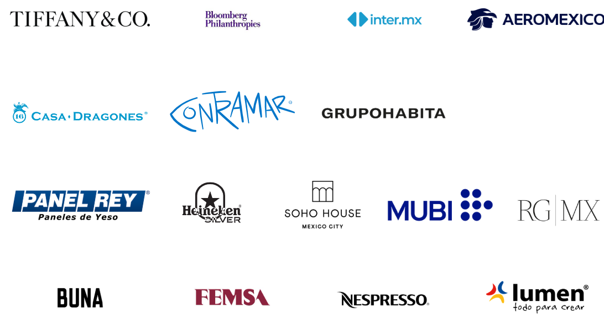

Patronato
El Patronato está compuesto por un grupo de líderes comprometidos con la promoción y desarrollo del museo.
PRESIDENTA Alejandra Servitje Labarrere
DIRECTORA Sonya Santos Garza
SECRETARIO Jerónimo Gaxiola Balsa
TESORERO Ismael Reyes Retana
PATRONOS
Aimée Labarrere de Servitje
Alfonso Castro Díaz
Alejandro Ramírez Magaña
Bertha González Nieves
Carlos Hank Rhon David
Jassan Rosas Eugenia
Braniff Garza Lagüera
Eugenio López Alonso
Fabián e Hilda Gosselin
Fernando Chico Pardo
Fernando Elías Calles
Francisco Agustín Coppel Luken
Gabriela Cámara Bargellini
Círculo Contemporáneo
El Círculo Contemporáneo reúne a personas apasionadas por el arte moderno y contemporáneo, ofreciendo eventos exclusivos y acceso especial.
Alejandro Bracho
Alejandro G. Gutiérrez
Alejandro Jassan
Alicia Gutiérrez
Amanda Echeverría
Ambar Quijano
Anapaula Zamacona
Anuar Duclaud
Beatriz Mapelli
Begoña De Pedro Arsuaga
Bettina Kiehnle
Bernardo Saenger
Carmen Castillo
Carlos Couturier
Catalina Zambrano
Cecilia Cervantes
Cecilia Laffan China
Cerrillo Dania Dávila
Edith Vaisberg
Eduardo Saenger
Erika Bianca
Fátima González
Fernando Vázquez
Gerardo Sarur
Guillermo Martínez
Javier Estevez
Jimena Antunez
Juan Antonio Margain
Juan Carlos Olivares
Karen Huber Louise
Carla Sala
Madelaine Lowenthal
Magnolia de la Garza
Manuel Cervantes
Marcella Lembert
Marcos Ruiz María
Fernanda Cadena
María Eugenia Cadena
María Rivero Mariana
Garcia Ramos
Mario Bours
Mario García Torres
Mauricio de la Garza
Mercedes Gutierrez
Mercedes Nasta
Mercedes Sáenz
Nicole Guillén
Pablo Estevez
Pablo Sepúlveda De Yturbe
Paige Haran
Pamela Ocampo
Paulina Torres
Rafael Micha
Ramiro Fernández
Ramiro González
Luna Rita Marimen
Rodrigo Acierno
Rodrigo Blanco
Rodrigo Peñafiel
Sandra Weil
Serapión Fernández
Sharon Marie Pérez Simenson
Sofía Servitje
Sofía García
Sophia Loyzaga
Tatiana Peralta
Toni Sadurni
Valeria Martínez
Vanessa Ifergan
Patrocinadores Corporativos
Gracias a nuestros patrocinadores corporativos, el museo puede ofrecer una amplia gama de actividades y exposiciones.
